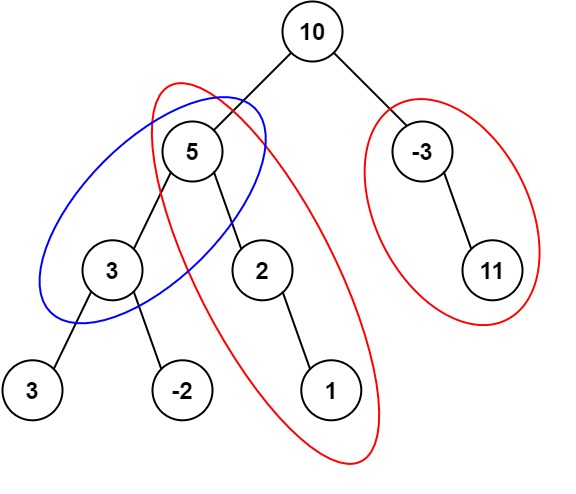

题面
给定一个二叉树的根节点 root ，和一个整数 targetSum ，求该二叉树里节点值之和等于 targetSum 的 路径 的数目。
路径 不需要从根节点开始，也不需要在叶子节点结束，但是路径方向必须是向下的（只能从父节点到子节点）。
示例 1：

输入： root = [10,5,-3,3,2,null,11,3,-2,null,1], targetSum = 8
输出： 3
解释： 和等于 8 的路径有 3 条，如图所示。示例 2：
输入： root = [5,4,8,11,null,13,4,7,2,null,null,5,1], targetSum = 22
输出： 3提示:
- 二叉树的节点个数的范围是
[0,1000] -109 <= Node.val <= 109-1000 <= targetSum <= 1000
思路
- 和第 10 题（560. 和为 K 的子数组）完全同一个思路，只是从数组换成了树：
560 和为 K 的子数组 | 437 路径总和 III（本题） | |
|---|---|---|
数据结构 | 一维数组 | 二叉树 |
"子数组/路径" | 连续一段 | 从某祖先到某后代的向下路径 |
前缀和 | 从 index 0 累加到当前 | 从根累加到当前节点 |
遍历方式 | for 循环 | DFS 递归 |
哈希表 | 一路加，不用删 | 进入子树时加，离开时要回溯（-= 1） |
- 核心公式（和 560 一样）：
前缀和(当前) - 前缀和(某祖先) = targetSum - 走到当前节点时，前缀和为
cur_sum - 查哈希表里
cur_sum - targetSum出现了几次 → 就有几条合法路径 - 把
cur_sum存入哈希表 - 递归左右子树
- 回溯：
cnt[cur_sum] -= 1
为什么只能用先序遍历
- 前缀和是"从根到当前节点的累加"，必须先把自己加进去，再往下递归子树
- 先序是 根→左→右，先处理自己再递归，天然满足
- 中序（左→根→右）/ 后序（左→右→根）都是先递归再处理自己，递归子树时当前节点的值还没加进
cur_sum，子树拿到的前缀和就是错的
为什么需要回溯
cnt是 dict（可变类型），所有递归层共享同一份。左子树路径上存的前缀和不应该被右子树查到- 回溯就是离开当前节点前把
cnt[cur_sum] -= 1，撤销影响 - `cur_sum` 不需要回溯：它是 int（不可变类型），通过参数传递，每层有自己独立的局部变量，递归返回后自动恢复
Python 可变 与 不可变类型与回溯
不可变（自动回溯） | 可变（需要手动回溯） |
|---|---|
int, float, str, tuple | dict, list, set |
- 不可变类型：
+=创建新对象，上一层不受影响 - 可变类型：直接修改原对象，所有层共享，改了必须撤回
cnt 0 1 的含义
- 代表"空前缀"（还没走任何节点之前，前缀和为 0）
- 作用：处理"从根节点开始的路径本身和就等于 targetSum"的情况
- 如果没有这个，
cur_sum - targetSum = 0查不到，就漏掉了从根开始的路径
代码实现
class Solution:
def pathSum(self, root: Optional[TreeNode], targetSum: int) -> int:
self.cnt = defaultdict(int)
self.cnt[0] = 1
self.res = 0
def dfs(node, cnt_sum):
if not node:
return
cnt_sum += node.val
if self.cnt[cnt_sum - targetSum]:
self.res += self.cnt[cnt_sum - targetSum]
self.cnt[cnt_sum] += 1
dfs(node.left, cnt_sum)
dfs(node.right, cnt_sum)
self.cnt[cnt_sum] -= 1
dfs(root, 0)
return self.res- 易错点：
- `self.res += cnt[cur_sum - targetSum]` 不是 `+= 1`：可能有多个祖先的前缀和满足条件，要加出现次数，不是加 1
- `cnt[0] = 1` 别忘：少了它就漏掉从根开始的路径
- 回溯 `cnt[cur_sum] -= 1` 别忘：不撤销的话左子树的前缀和会污染右子树
- 用 `defaultdict(int)` 或 `.get()`：普通 dict 查不存在的 key 会 KeyError
- 必须先序遍历：先算自己的前缀和，再递归子树。中序/后序递归子树时当前节点的值还没加进去
- 复杂度：时间 O(n)，空间 O(n)（哈希表 + 递归调用栈）